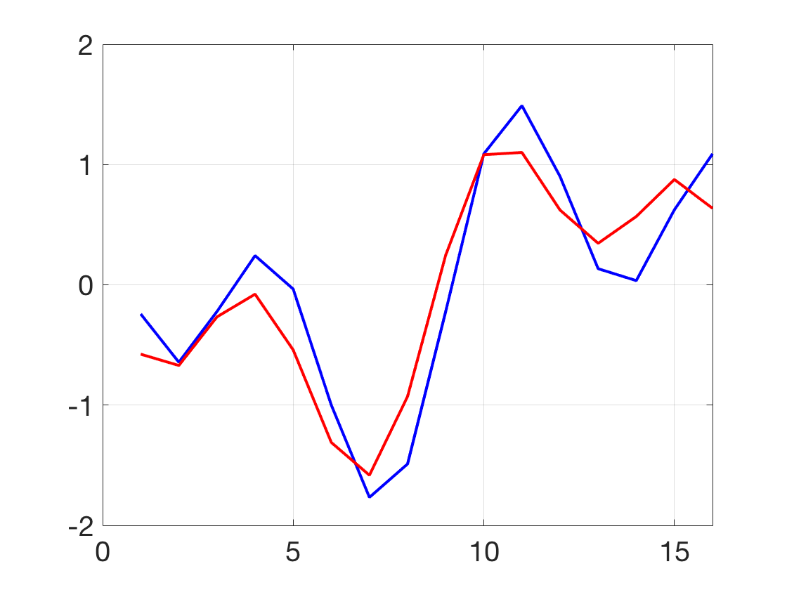
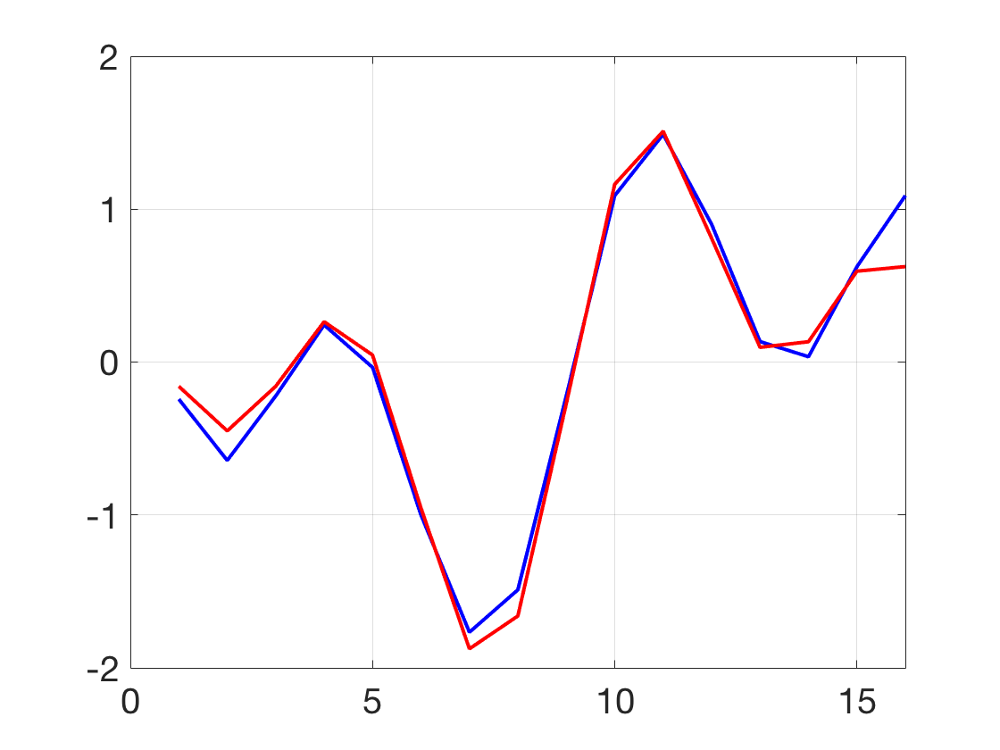
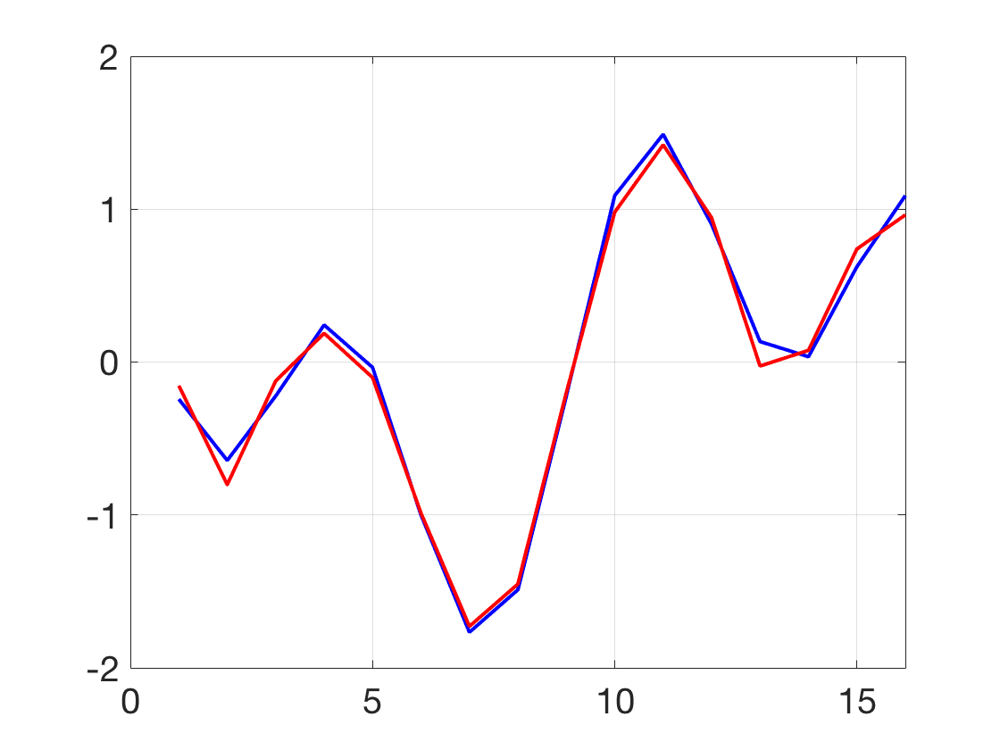

Additional Examples 11.4
1 Apply 3-bit quantization to the numbers \(-3, -1, \pi\) and \(4\) in the interval \([-L,L]=[-5,5].\) Then dequantize and evaluate the quantization errors.

Formula (11.40) defines \(q = \frac{2L}{2^b-1} = \frac{10}{2^3-1} =\frac{10}{7}\) for 3-bit quantization. For each number \(y\), we find
\(z=\) round \(y/q\) and \(\overline{y} = qz.\) The table below shows \(y, z, \overline{y}\) and the quantization error \(|y-\overline{y}|.\)
\[ \begin{array}{rrrc}
y&z&\overline{y}&{\rm error}\\
-3&-2&-\frac{20}{7}&0.1429\\
-1&-1&-\frac{10}{7}&0.4286\\
\pi&2&\frac{20}{7}&0.2844\\
4&3&\frac{30}{7}&0.2857
\end{array}
\]
2 Apply the MDCT to the signal \(x_i = \sin \frac{\pi i}{3}+\cos \frac{\pi i}{7}, i=0,\ldots, 47.\) (a) Calculate \(v_1=M[x_0\ldots x_{31}]^T,v_2=M[x_{16}\ldots x_{47}]^T,
y=Nv_1, z=Nv_2,\) and check that \(([y_{16}\ldots y_{31}]+[z_0\ldots z_{15}])/2\) reproduces \( [x_{16}\ldots x_{31}].\) (b) Quantize and dequantize the \(v_i\) on the interval \([-L,L] = [-3,3]\) with 2, 3, and 4 bits, respectively, to compare the reconstructions of \( [x_{16}\ldots x_{31}].\)
(a) We use the \(16\times 32\) matrix \(M\) to apply the MDCT and set \(N=M^T.\) The Matlab commands
x=sin(pi*(0:47)/3)+cos(pi*(0:47)/7);x=x';
v1=M*x(1:32);v2=M*x(17:48);
y=N*v1;z=N*v2;
xnew=(y(17:32)+z(1:16))/2;
build the signal \(x\), apply the MDCT followed by the inverse MDCT and combination on the overlap. The two columns below show the agreement of \(x\) on the left and the reconstructed \(x\) on the right.
-0.2425 -0.2425
-0.6435 -0.6435
-0.2225 -0.2225
0.2425 0.2425
-0.0349 -0.0349
-1.0000 -1.0000
-1.7670 -1.7670
-1.4895 -1.4895
-0.2225 -0.2225
1.0885 1.0885
1.4895 1.4895
0.9010 0.9010
0.1340 0.1340
0.0349 0.0349
0.6235 0.6235
1.0885 1.0885
(b) To apply the quantization/dequantization, the lines
b=2; L=3; % b = quantization bits, [-L,L] amplitude range
q=2*L/(2^b-1);
v1=round(v1/q);v1=v1*q;
v2=round(v2/q);v2=v2*q;
should be inserted in the code before the inverse MDCT. The resulting comparisons, with the blue curve denoting the original signal \(x\) and the red curve denoted the reconstructed curve, are shown below for 2, 3, and 4 bit quantization, respectively.


